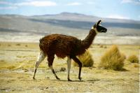

|
Samedi 29 septembre
Ce matin, on part vers le sud, vers Uyuni. On part de 4000 mètres pour arriver
à 3700. Toute la journée, 7 heures durant, on cahote sur la piste poussiéreuse.
On grimpe péniblement à 20 km/h sur une montagne, on redescend à-pic de l'autre
côté, on grimpe sur la suivante, on suit une vallée avant de regrimper, on croise
des tas de ponts perdus sans route d'accès ni eau dessous (!), on traverse des
cours d'eau, on crève, on regrimpe, on redescend et ainsi de suite toute la
journée. On dirait que ça ne va jamais s'arrêter, qu'on va escalader les montagnes
éternellement. En chemin, on rencontre des troupeaux de lamas élevés pour leur
laine, leur peau, leur viande et des vigognes sauvages très jolies. Elles ressemblent
fort aux guanacos de Patagonie, sauvages eux aussi, marrons et crèmes avec un
peu la même tête. Le quatrième du même style, c'est l'alpaga, plus petit et
plus de laine, mais il n'y en a pas ici. Le soir, on retrouve Geneviève et Joël,
deux lyonnais fort sympathiques. On partira avec eux découvrir le Salaar et
le sud Lipez.
Dimanche 30 septembre
11H00, le 4X4 est chargé, on a retrouvé Samuel et Daniel les deux suisse allemands
avec qui on a visité la mine à Potosi. Décidément, tous les garçons se sont
mis à la rime: Joël, Samuel, Daniel et Lionel! Heureusement qu'il y a Roger,
notre chauffeur-guide pour faire diversion. D'ailleurs lui, c'est Mac Gyver.
Il a un rouleau de scotch autour du levier de vitesse. On est paré. Et puis
il y a aussi Carmen, notre cuisinière. Tous les 8 nous sommes chargés, alors
en route! La première chose surprenante que nous voyons en roulant dans cette
plaine plate et désertique, ce sont... des montagnes flottantes se reflétant
dans un lac imaginaire! Notre premier mirage! Super! On dirait une île, on avance,
et en fait notre lac disparaît et l'île se rattache à la montagne voisine.
On arrive au salaar. Ce désert de sel s'étend sur 12000 km2. Soit deux départements
français! Il y a 4 à 5 mètres de profondeur de sel, puis de la glaise, à nouveau
du sel, etc, et tout cela sur 40 mètres. Et desous, il y aurait du lithium.
Ici, il pleut de décembre à février et il est alors quasiment impossible de
circuler sur le salaar. On arrive à un hôtel entièrement fait de blocs de sel
taillés (sièges, lits recouverts de peaux de lamas, tables...) dont les murs
ne sont que peu abîmés par l'eau lors de la saison pluvieuse. De toute façon,
le salaar est toujours humide à cause ou grâce à des ruisseaux souterrains.
Ce sel est exploité pour la consommation bolivienne seulement. Il faut le sécher
(tas au soleil puis fours), le réduire en petits morceaux grâce à une sorte
de concasseuse chargée à la pelle, l'ioder puisqu'il ne l'est pas (un verre
d'iode pour 20 quintaux de sel, mélange fait dans la concasseues). On découvre
tout cela à Colchani où 70 à 80 familles exploitent le salaar.
On reprend notre route sur le salaar. On ne sait pas trop sur quoi on roule,
du sel, de la neige, un lac ou bien on vole! Notre chauffeur se dirige aux montagnes
qui se dessinent au loin. A midi, arrêt déjeuner sur la Isla del Pescado, une
île en forme de poisson perdue dans ce désert, complètement recouverte d'immenses
cactus! Surrréaliste! De 11H00 du mat' à 13H30, puis de 15H00 à 18H00, on roule
à travers le désert blanc. Parfois on suit de traces de voitures, d'autres fois
non. On se sent alors tout seul perdu au milieu de cette immensité de sel. Ca
brille, ça éblouit, c'est irréel. Comme il y avait la pampa à perte de vue en
Patagonie, il y a cette immensité blanche tout autour de nous. Même si on aperçoit
tout de même quelques montagnes au loin. 127 km de salaar plus loin, on sort
du sel et de ses jolis dessins. Pour cela, il faut passer dans 40 cm d'eau de
pluie, là où la couche de sel est plus réduite (5 à 30 cm).
On passe la nuit à San Juan, petit village perdu oú on cultive le quinoa (céréales
qui poussent en arbustes et auraient les mêmes vertues nutritives que le riz)
et où on élève lamas et moutons. Avec la lumière du couchant et le vent violent
qui transporte la poussière, ça fait un peu ambiance fin du monde. C'est presque
la pleine lune et les étoiles sont magnifiques, très brillantes. Malgré tout,
on n'aimerait vraiment pas vivre ici si loin de tout.
Suite du voyage : Les lagunes
|
Bolivie
Potosi - Uyuni
|

Bolivie
Potosi - Uyuni
|
Bolivie
Potosi - Uyuni
|
Bolivie
Potosi - Uyuni
|
|
|